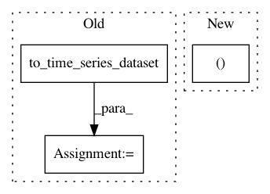

cdaf93634b49f3a5749adbe359c2169c51f0a6fe,tslearn/neighbors.py,KNeighborsTimeSeriesMixin,kneighbors,#KNeighborsTimeSeriesMixin#Any#Any#Any#,20
Before Change
X = self._fit_X
self_neighbors = True
else:
X = to_time_series_dataset(X)
if self.metric == "dtw":
cdist_fun = cdist_dtw
elif self.metric in ["euclidean", "sqeuclidean", "cityblock"]:
cdist_fun = lambda X, Xp: scipy_cdist(X.reshape((X.shape[0], -1)),
After Change
if X.ndim == 2: // sklearn-format case
X = X.reshape((X.shape[0], -1, self.d))
fit_X = self._fit_X.reshape((self._fit_X.shape[0], -1, self.d))
else:
fit_X = self._fit_X
In pattern: SUPERPATTERN
Frequency: 3
Non-data size: 3
Instances
Project Name: rtavenar/tslearn
Commit Name: cdaf93634b49f3a5749adbe359c2169c51f0a6fe
Time: 2018-12-30
Author: romain.tavenard@univ-rennes2.fr
File Name: tslearn/neighbors.py
Class Name: KNeighborsTimeSeriesMixin
Method Name: kneighbors
Project Name: rtavenar/tslearn
Commit Name: 1f64e8d111a67ed8c97f9251f299805496b3644f
Time: 2019-08-20
Author: romain.tavenard@univ-rennes2.fr
File Name: tslearn/svm.py
Class Name: TimeSeriesSVR
Method Name: fit
Project Name: rtavenar/tslearn
Commit Name: 1f64e8d111a67ed8c97f9251f299805496b3644f
Time: 2019-08-20
Author: romain.tavenard@univ-rennes2.fr
File Name: tslearn/svm.py
Class Name: TimeSeriesSVC
Method Name: fit